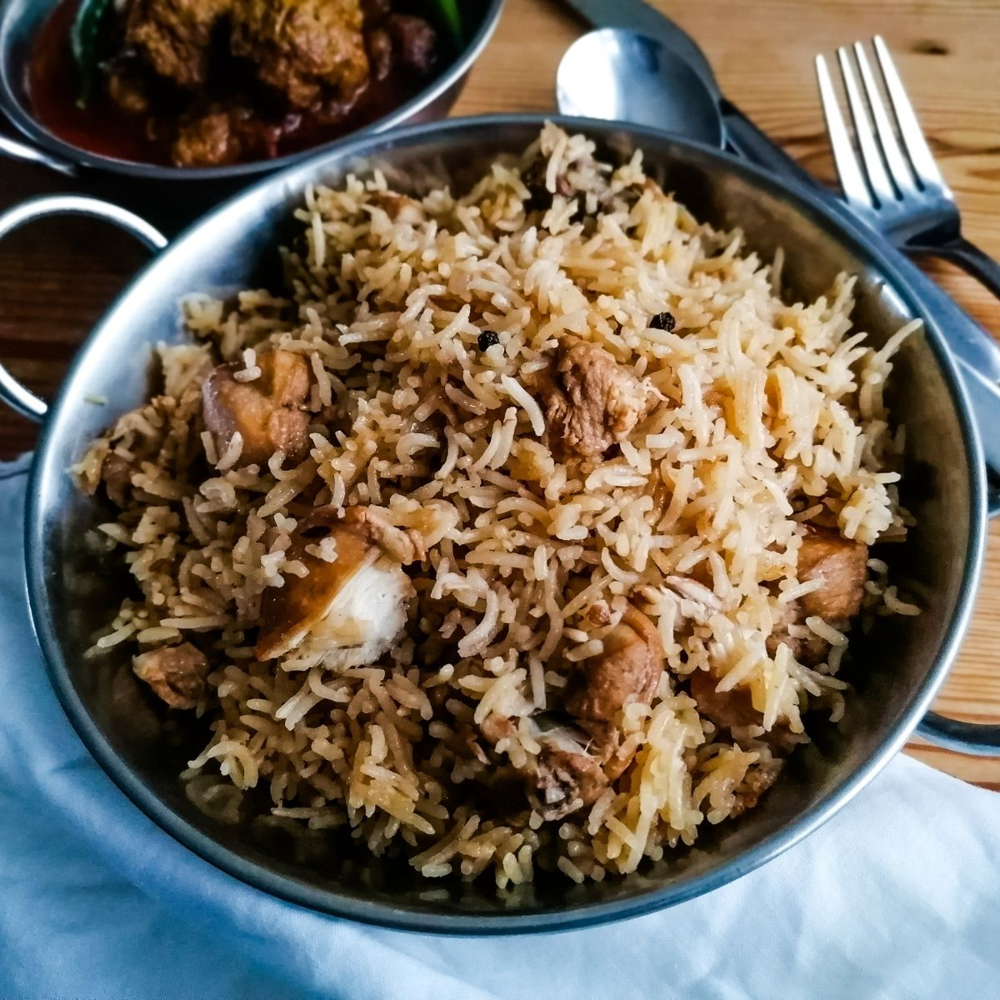

Home
Pilau

Description:
The Pilau dish (also known as pilaf) originates from Iran, Turkiye, Latin America and some parts of Africa. It is famous amongst almost all of
the middle east and enjoyed by many.
The core of the dish is rice and meat along with nuts, this is how it is traditionally prepared.
The meat can vary as chicken, beef, mutton, veal etc. are all used in preparation!
It is a delight that takes a lot of care to properly
create. The rice is soaked in broth made from water and fat which is what gives it an amazing flavour.
Ingredients required:
- Rice
- Meat (any kind)
- Pilau Masala
- Spices (cumin, cloves, cinnamon, etc.)
How to make Pilau:
- Get your chicken, whole spices, whole garlic and onion in a deep pot, add water and let this simmer for 20 minutes over a low heat.
If any dark coloured froth comes to the top, skim it off.
-
Strain the broth through a colander and reserve the liquid.
-
Fry onions in a wide pan using ghee until they're golden brown.
-
Once the onions are gold, add in the chicken we reserved from our broth earlier. You want to fry this alongside the onions and ghee,
until it is also takes on a golden hue.
-
Once the chicken is looking a bit more coloured, we can add in the broth liquid from earlier. Once this comes to a rolling boil, add in the rice.
-
Cook this over a high heat, gently folding with a slotted spoon and scraping the bottom of the pan occasionally until the water has mostly evaporated.
-
Bring the heat down to as low as you can get it, cover the rice with a tight-fitting lid lined with either a clean dish cloth or foil,
and allow the rice to steam like this for 15-20 minutes.
-
Once the rice has steamed, open it up, bask in the beautiful aroma of your creation, and then fluff the rice grains up gently
using a slotted spoon, fork, or a very small side plate.